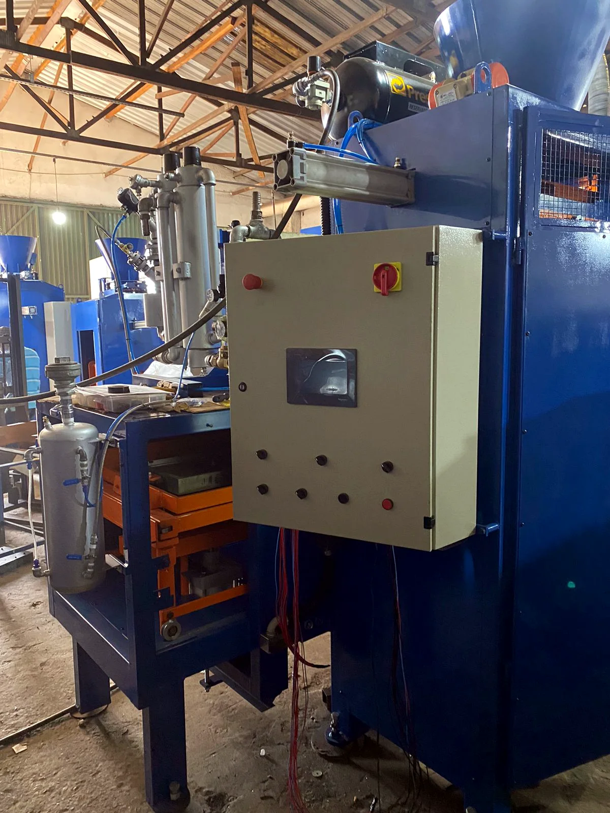
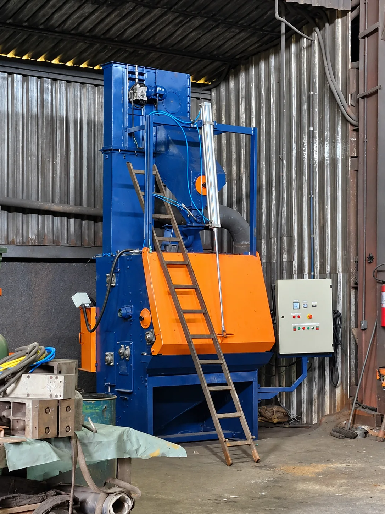
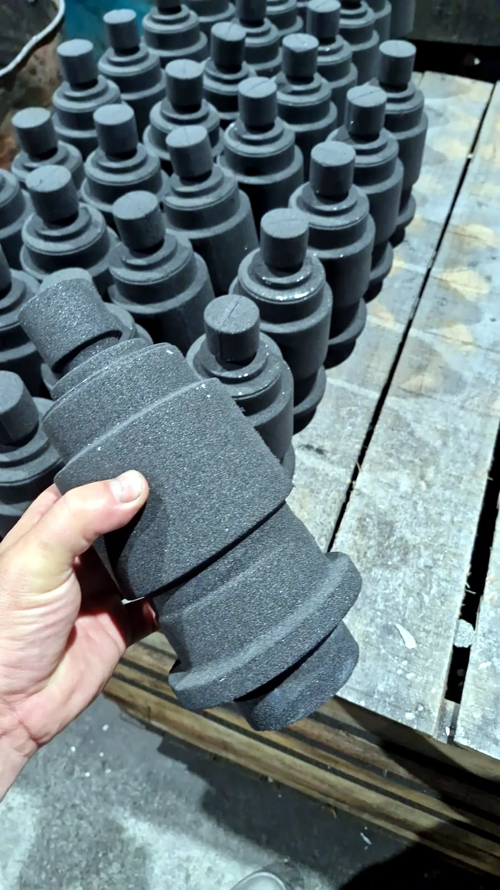

AironSul Metais · Fundição
Fundição que transforma metal em soluções para a indústria.
Conheça a estrutura, o processo produtivo e o trabalho desenvolvido pela AironSul Metais em Araquari, Santa Catarina.
AironSul Metais 02
Uma estrutura industrial dedicada à fundição.
A AironSul Metais é uma empresa localizada em Araquari, Santa Catarina, dedicada ao segmento de fundição. Sua operação reúne estrutura fabril, equipamentos e processos industriais voltados à produção de peças e componentes fundidos.
Por meio deste espaço, apresentamos um pouco da nossa estrutura, produção e rotina industrial, aproximando clientes e parceiros da AironSul Metais.
Conheça a operação
Processo 03
O metal ganha forma dentro da nossa fundição.
O processo de fundição envolve diferentes etapas e exige estrutura, controle e atenção durante toda a operação. Os registros mostram parte da rotina produtiva da AironSul Metais.
Registro de operação
Calor, estrutura e trabalho industrial registrados dentro da fundição.
Nossa estrutura 04
Uma operação construída para o ambiente industrial.
Máquinas, áreas produtivas e equipamentos compõem uma estrutura preparada para atender diferentes demandas de fundição.

O ambiente fabril faz parte da identidade de quem transforma metal todos os dias.
Produção 05
Do ambiente fabril ao resultado final.
Os registros da produção ajudam a mostrar de perto a rotina da fundição, os equipamentos utilizados e as peças resultantes desse trabalho.

Peças 06
Resultado de um processo industrial real.
Cada etapa da fundição culmina na produção de peças destinadas a aplicações industriais. Aqui apresentamos registros reais de componentes produzidos pela AironSul Metais.
SuperfícieFormatoGeometriaAcabamento
Fundição é transformação.
Da matéria-prima ao componente final, cada etapa exige estrutura, atenção e trabalho industrial.
Galeria 07
Por dentro da AironSul.
Um pouco da nossa estrutura, produção e rotina industrial.
Diferenciais 08
Presença industrial que se vê.
Estrutura industrial
Registros reais apresentam a estrutura e o ambiente fabril da empresa.
Produção própria
A atividade realizada dentro da fundição, do processo às peças.
Atendimento direto
Contato simples para aproximar empresas, clientes e parceiros.
Credibilidade
Avaliação pública de 5 estrelas no Google.
Onde estamos 09
AironSul Metais em Araquari, Santa Catarina.
R. Dr. Adolfo Bezerra de Menezes, 249 Porto Grande Araquari · SC 89245-000 Abrir no Google MapsContato 10
Quer conhecer melhor a AironSul Metais?
Entre em contato e fale diretamente com nossa equipe.